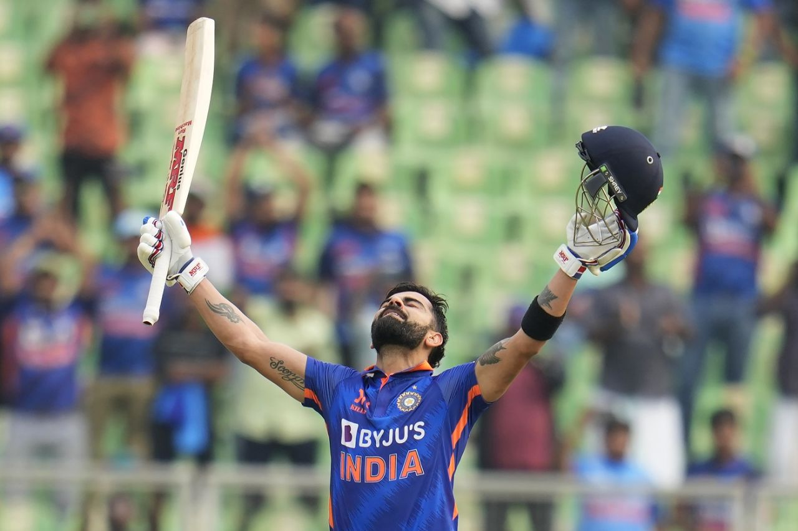
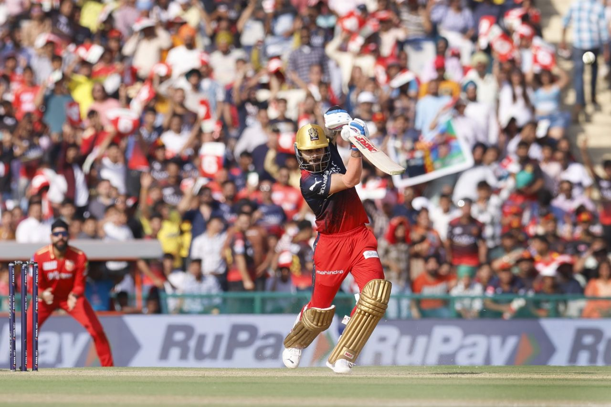

Virat Kohli (born 5 November 1988) is an Indian international cricketer and the former captain of the Indian national cricket team who plays as a right-handed batsman for Royal Challengers Bangalore in the IPL and for Delhi in Indian domestic cricket. Widely regarded as one of the greatest batsmen of all time.he is male cricket of the decade(2011-2020).
virat kohli has played 115 t20Is(107 innings) and scored 4008 with the average of 52.74 and strike rate of 137.97. he has 1 int. century(122*(61) vs afg) and 37 half centuries in this format. he has smashed 356 4s and 117 6s. he has played some mind-blowing knocks like 82*(51)vs aus in world cup 2016 and 82*(53) vs pak in world cup 2023.
virat kohli has played 274 odIs(265 innings) and scored 12898 with the average of 57.32 and strike rate of 93.63. he has 46 int. and 65 half centuries in this format. he has smashed 1211 4s and 139 6s. his highest score is 183 vs pak. 
virat kohli has played 108 tests(183 innings) and scored 8416 with the average of 48.93 and strike rate of 55.33. he has 7 double centuries,28 int. centuries and 37 half centuries in this format. he has smashed 941 4s and 24 6s. his highest score is 254* against sa.
virat kohli has played 108 tests(183 innings) and scored 8416 with the average of 48.93 and strike rate of 55.33. he has 7 double centuries,28 int. centuries and 37 half centuries in this format. he has smashed 941 4s and 24 6s. his highest score is 254* against sa.
